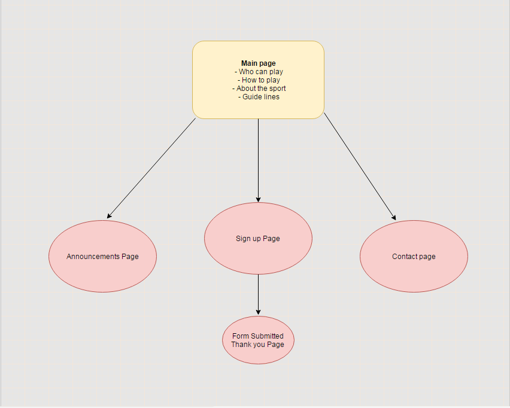

CP1406 - Assignment 1 - Project Plan
Name:
John Buttigieg
Goals
This site is being developed for multiple reasons, each benefiting the clientel and the company.
Reasons are to provide brief information on the sport of volleyball.
To provide contact details for clients to ask further questions or enquire about anything the company has to offer.
Success Evaluation
Success of the website will be evaluated based on various data such as:
- The amount of enquiries recieved through client's using the contact information on the website
,this information can be aquired by asking the client how they found the contact information
as their enquiry is being resolved.
- The amount of forms submitted from the form submit page.
- The amount of visits the website is getting (though this is not accurate information,
it can still benefit the success evaluation in some way).
Target Audience
As requested by the employer, this site is going to be designed to focus on attracting
a younger audience (ages 15 - 30).
This is going to be achieved in a variety of ways such as
- Keeping things simple in this generate, people in this age group are extremely
busy and are flooded with so much information coming from technology. Making the website
giving the goal in a simple and clear way taking minimal time to understand the point
of the website will be vital to the success of it.
Designing the front page of the website to be attractive to first time visitors is very important and will be implented.
-
Giving the website lots of colour makes it appealing to the younger audience
Site Flowchart

GitHub Repository
John's Github repo for this assignment:
Repo Name: a1
https://github.com/johnbuttigieg/a1